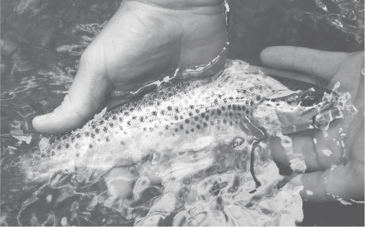
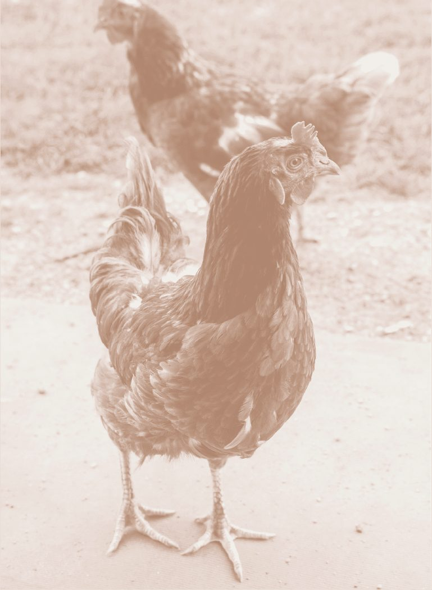
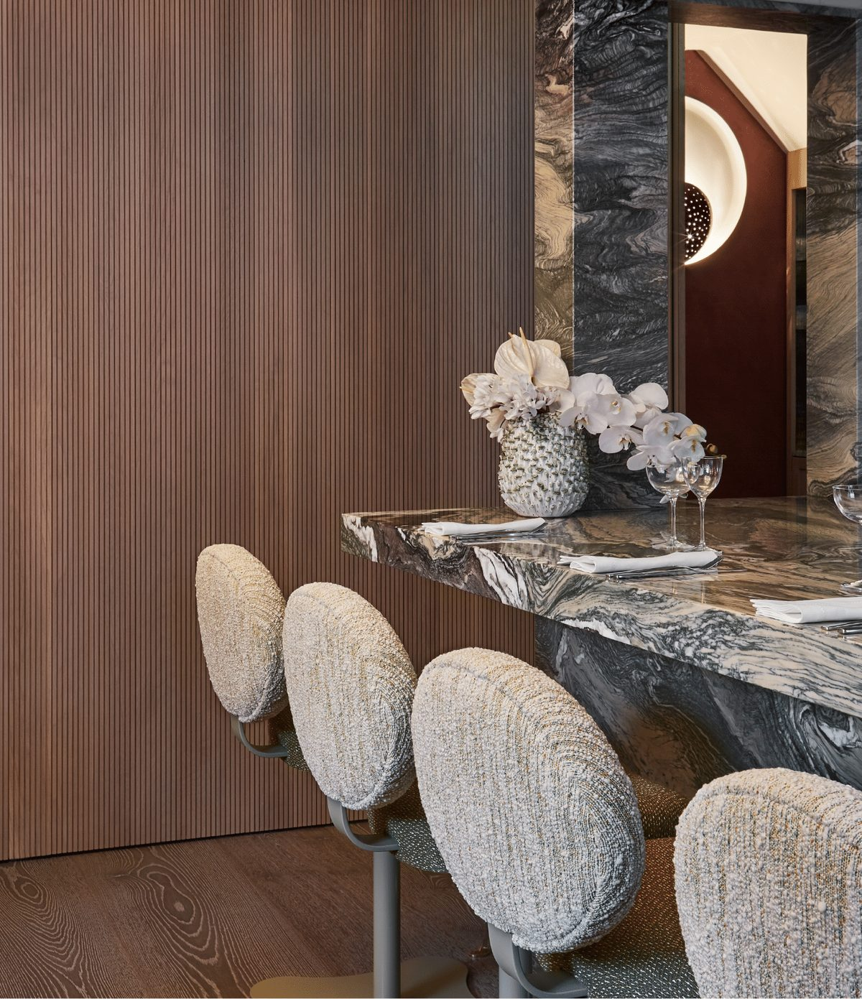

We cook with people who care as much as we do.
Almost everything at Muse comes from British farmers, fishermen, millers and makers we know by name. Many have supplied the kitchen since the day it opened. The knives, the bowls and the room itself were made for us too.


A family-run London butcher since 1972, sourcing British meat from small free-range farms raising native breeds.
Works with more than fifty Cumbrian farms for breed-specific meat, keeping traditional fell farming alive.
Wild, seasonal seafood from UK waters, bought from responsible day boats and with us within 48 hours.
A Cornish family business supplying small-day-boat fish, landed and delivered within twelve hours.
Hand-dived scallops, creel-caught langoustine and native lobster from Scotland, overnight to London.
Organic British pulses and heritage grains from East Anglia; they go into our sourdough.
A Cotswold mill of speciality flours from traditional and international grains — the flour in our bread.
Fruit, edible flowers, herbs and leaves from more than forty-five organic and biodynamic farms.
Micro cress, pea shoots, edible flowers and sea vegetables grown in glasshouses — over 280 varieties.
Growers across the UK, Italy and Spain, and the markets of Rungis.
A Suffolk Jersey herd. We make our cultured butter from their cream, every day.
A North Norfolk estate brewery using its own barley and water. Their Robin Stout goes into the sourdough.
Suffolk bean-to-bar makers working directly with single-origin cacao farms.
Provençal estate oils — Fruité Vert and Noir d'Olives Maturées — from four local olive varieties.
Teas bought directly from independent farms, with flavour, sustainability and fair pay to growers first.
Specialty-grade Arabica from award-winning estates: Panama Geisha, Hawaii Kona, Jamaica Blue Mountain, Brazil Yellow Bourbon.
Everyday kitchen knives from recycled and local materials — handles from a fallen tree, steel from car springs.
A Peckham bladesmith workshop that hand-forges our restaurant knives.
Rebecca Korner designed Muse's interiors across both floors, blending the classic and the avant-garde.